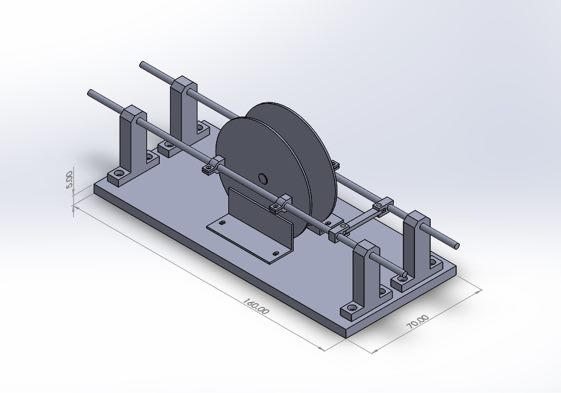
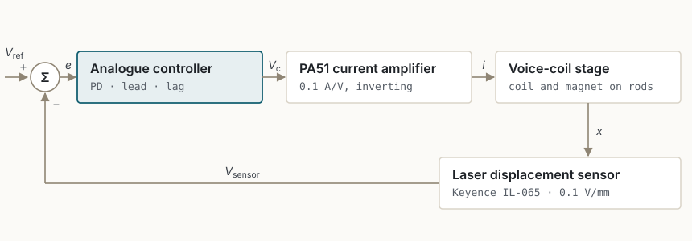
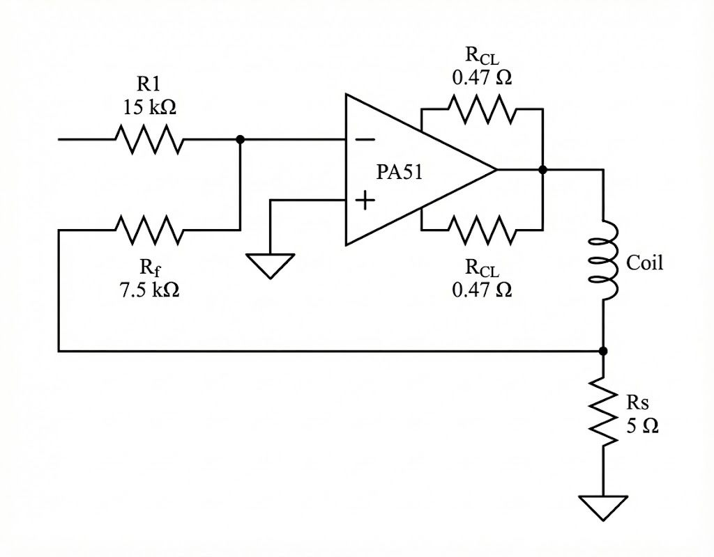
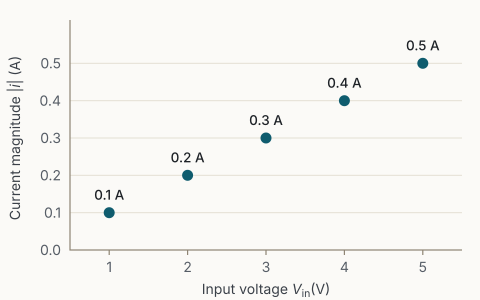
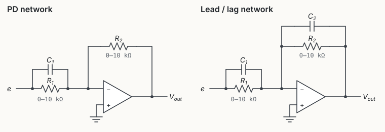
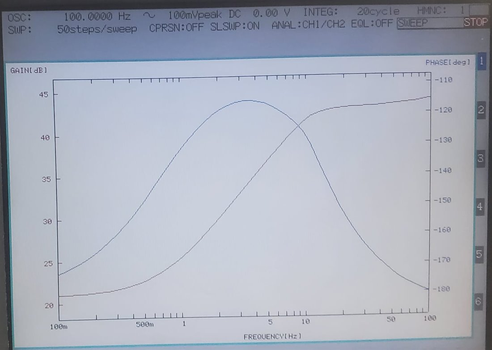
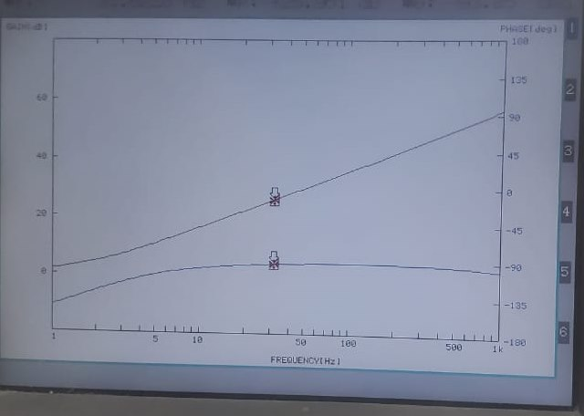
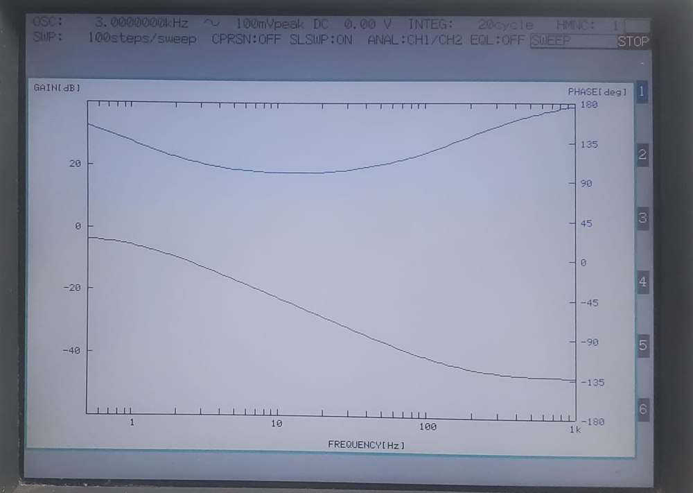

Voice-Coil Stage Design and Feedback Control
Summary
- Research question
- How can analogue feedback stabilise and position a voice-coil stage without a mechanical restoring spring?
- What I did
- Designed and assembled the stage, configured the PA51 current drive and laser position feedback, measured frequency responses, and evaluated analogue compensation.
- Key result
- In the bench tests, the PI-controlled response drifted and did not settle at the commanded set-point. PD and lead compensation produced more stable tracking under the tested conditions.
Overview
A voice-coil actuator carries current through a coil suspended in the field of a permanent magnet. The Lorentz force on the conductor is proportional to that current, so while the coil remains in the useful part of the field the force follows the commanded current. Drive is direct: no gearing or leadscrew stands between the coil and the moving part, which removes backlash, keeps friction low and lets the actuator respond quickly to small commands. Those properties suit optical focus and scanning mechanisms, disk-drive head positioners, and precision positioning and active vibration-isolation stages.
The stage built here applies that principle on one axis: the coil and permanent-magnet assembly are mounted on two parallel guide rods, a PA51 power amplifier drives the coil as a current source, and a Keyence laser triangulation sensor measures the carriage position. Because the assembly runs on rods rather than on a spring or flexure, the plant was modelled as a mass with viscous damping and no restoring term: it has no rest position of its own, so the stiffness that holds a commanded position has to come from the analogue feedback loop. Measuring that loop and its compensators is the subject of this study.
Stage and control loop
I designed the stage in SolidWorks and assembled it. T- and L-type end brackets hold two parallel guide rods above a 160 × 70 × 5 mm base plate; the coil holder, the magnet holder and a coupling sit between them, with linear bearings confining travel to a single axis. The laser sensor measures displacement along that axis.


The loop around that mechanism is entirely analogue. An OP27G subtractor takes the difference between the reference and sensor voltages, an op-amp network shapes the resulting error, and the PA51 stage converts that signal into coil current. The laser sensor closes the loop by returning the carriage position as a voltage.

Current amplification and position sensing
The PA51 circuit converts a command voltage into coil current, and therefore into electromagnetic force on the carriage. It is a transconductance stage: an input resistor R1 = 15 kΩ and a feedback resistor Rf = 7.5 kΩ set the gain, and a 5 Ω sense resistor Rs in series with the 40 Ω coil returns the current as a voltage. The stage is inverting, giving iL ≈ −0.1 Vin: a transconductance of 0.1 A/V in magnitude.

Resistances in ohms; iL in amperes for Vin in volts.
Five DC operating points were measured across the command range, and a 5 Hz sinusoidal command was checked on the oscilloscope as a continuous case. Dividing each sense voltage by the sense resistor gives the coil current, and the transconductance holds at 0.1 A/V over every point measured. The largest current tested was 0.5 A, which bounds the measured range rather than the capability of the amplifier.

| Input Vin (V) | 1 | 2 | 3 | 4 | 5 |
|---|---|---|---|---|---|
| Sense voltage Vsense (V) | −0.5 | −1.0 | −1.5 | −2.0 | −2.5 |
| Current magnitude |i| (A) | 0.1 | 0.2 | 0.3 | 0.4 | 0.5 |
Position sensing
Carriage position is measured by a Keyence IL-065 laser triangulation sensor, calibrated at 0.1 V/mm: every millimetre of travel changes the sensor output by 0.1 V, so a displacement in millimetres is the sensor voltage divided by that sensitivity. The sensor works about a 65 mm reference distance over a 55–105 mm measuring window; that window is the span over which the sensor reads, and is wider than the travel of this stage.
Plant response
With the coil force F = Kti acting on a moving mass with viscous damping and no restoring spring, the stage was modelled as a mass–damper, with position in metres.
Mass–damper model
Model structure used for design; the parameters were not identified numerically.
| x | stage position (m) |
|---|---|
| i | coil current (A) |
| m | moving mass (kg) |
| c | viscous damping coefficient (N·s/m) |
| Kt | coil force constant (N/A) |
LaTeX source (copyable)
m\ddot{x}+c\dot{x}=K_t\,i,\qquad
G_{xi}(s)=\frac{X(s)}{I(s)}=\frac{K_t}{m s^2+c s}\ \ \mathrm{(m/A)}Under a constant force with positive damping, the model’s velocity settles at F/c while its position keeps changing, so the positioning stiffness has to come from feedback. The model describes the assumed structure only; it does not exclude friction, end stops, cable forces or field non-uniformity in the physical stage.
The open-loop response was measured on an NF FRA5097 analyser over a 1–200 Hz sweep, from the drive input voltage to the laser-sensor voltage. Between about 1 and 50 Hz the magnitude falls with frequency, consistent with an inertia-dominated response. Narrow dips near 6–11 Hz and about 70 Hz, and the flattening above about 50 Hz, were observed but not investigated. The analyser displays phase within ±180°, so the phase trace wraps near 20 Hz.

Compensator design
To shape the response of the stage I designed two families of analogue compensator. Single-op-amp PD, lead and lag networks were built and their frequency responses measured; modular P, D and I stages summed by an inverting amplifier were designed and are documented as circuits, but no individual measurements of them were recorded. All of these networks invert:
Lead when R1C1 > R2C2; lag when R1C1 < R2C2.

| Controller | Intended effect | Evidence |
|---|---|---|
| PD network | Phase lead rising towards 90° with frequency, adding damping to the mass-dominated plant | Measured frequency response; stable loop after tuning |
| Lead network | Phase advance over a limited band, with bounded high-frequency gain | Measured frequency response; 2 Hz sine-reference test |
| Lag network | More gain at low than at high frequency, at the cost of phase lag; finite DC gain, so not an ideal PI controller | Measured frequency response |
| Modular P, D and I stages | Separately adjustable actions; the I stage is a leaky integrator | Circuit design; no individual measurements recorded |
| PI (bench trial) | Integral action to reduce steady-state error | Bench observation of drift and no settling, attributed to the added lag; the circuit used was not recorded |
Circuit details
| Stage | Transfer function | Components | Notes |
|---|---|---|---|
| P stage | Rip = 4.5 kΩ; Rpot,p 0–10 kΩ | Kp ≈ 0–2.22 | |
| D stage | Cd = 22 µF; Rid = 100 Ω; Rpot,d 0–50 kΩ | , up to 1.1 s; (corner ≈ 72.3 Hz); high-frequency gain , e.g. ≈ 454.5 (53.2 dB) for Kd = 1 s | |
| I stage | Ci = 22 µF; leak resistor Rdrift = 1 MΩ; Rpot,i 0–50 kΩ | ≈ 0.91 s⁻¹ at 50 kΩ; ≈ 0.045 rad/s; zero input resistance is not a valid operating point | |
| Summing stage | or | 10 kΩ input resistors | Forms modular PD or PI |
| PD network | R1, R2 0–10 kΩ | C1 not recorded | |
| Lead/lag network | R1, R2 0–10 kΩ | Lead: R1C1 > R2C2; lag: R1C1 < R2C2; C1, C2 not recorded |
Measured compensator responses
Each single-op-amp network was swept on the analyser. Because the networks invert, −180° corresponds to zero phase shift of the underlying compensator, and the instrument wraps phase to ±180°. The values in the captions are read from screen photographs and are approximate.



Experiments and results
Each compensator was placed in the loop and tuned on the bench against the laser feedback. PD compensation was tuned first and gave a stable closed loop, its derivative action supplying the damping the springless plant does not provide. A PI trial followed, but the integral action added enough phase lag that the response drifted and never settled at the commanded set-point, and that configuration was set aside. Lead compensation was then adopted for the closed-loop tests, since it contributes phase over the frequencies of interest while keeping its high-frequency gain bounded.
The lead network was designed to add phase across roughly 1–15 Hz; its measured response reaches a maximum advance of about 65° near 3 Hz. With that compensator in the loop the stage tracked a 2 Hz sinusoidal reference from the function generator, and in the set-point demonstration it moved to and held successive commanded positions. Reference and position were not logged together, so these are bench observations rather than quantitative tracking measurements: the 2 Hz figure is the test condition, not a measured bandwidth, and no settling time, tracking error or stability margin is claimed.
| Compensator | Closed-loop behaviour |
|---|---|
| PD | Stable closed loop after tuning |
| PI | Response drifted; no settling at the commanded set-point |
| Lead | Tracked a 2 Hz sinusoidal reference; held successive set-points |